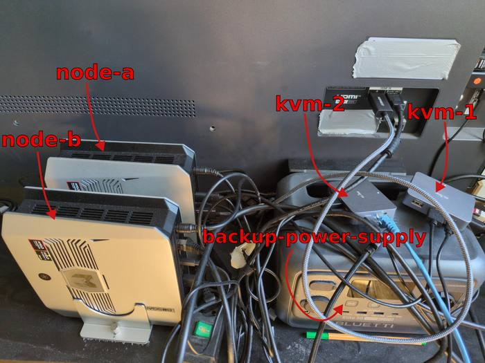
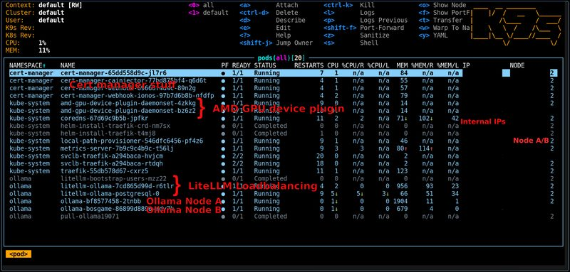

He put his home AI cluster and GPT-5.5 behind the same URL, then benchmarked both
On Tim Schupp's home AI cluster, a 1.5B local model answers its first token in 218 milliseconds. A 32B local reasoning model answers in 630. Both numbers came out of the same benchmark run that also hit GPT-5.5, over the same OpenAI-compatible endpoint, because Schupp built his cluster specifically so he could stop guessing and put local and cloud models behind one URL to compare honestly.
Edge in the Wild is our occasional spotlight on real builders running AI on hardware they own. This one: Tim Schupp's private, two-node Kubernetes cluster, first published April 30, 2026. Full writeup and every benchmark below is sourced from blog.t1m.me — "Building my own private Kubernetes AI cluster". All numbers, hardware choices and photos in this post are Tim Schupp's own, summarized and credited, not reproduced wholesale.

The hardware: unified memory, not a GPU rack
No discrete GPUs here. The cluster is two Bosgame mini-PCs, each built around an AMD Ryzen AI 395 ("Strix Halo") APU with 128 GB of unified RAM, of which 94 GB is carved out as VRAM through a BIOS setting. That single number is the interesting part: 94 GB of usable model memory, on integrated graphics, in a box small enough to sit on a desk. It's the same architectural bet Apple's unified-memory Macs make — skip the PCIe bottleneck between CPU and GPU memory entirely — just running Linux instead of macOS.
The software stack: NixOS, k3s, and one gateway for everything
Both nodes run NixOS, joined into a Kubernetes cluster via k3s, networked over Tailscale (with Flannel handling the in-cluster interface) so the two machines behave as one logical cluster regardless of which physical network they're on. Ollama serves the actual models per node; LiteLLM sits in front as an OpenAI-compatible gateway with usage-based routing, so any client — a chat UI, a script, a benchmark harness — talks to one URL and doesn't need to know which node, or which model, answered. Traefik and cert-manager handle ingress and TLS. It's a genuinely production-shaped stack pointed at a homelab, not a shell script gluing two GPUs together.
k3s server --cluster-init \
--token-file "/etc/secrets/k3s/token" \
--node-external-ip "node-a" --tls-san "node-a" \
--flannel-iface "tailscale0"The cluster-init command from the builder's own writeup — Tailscale as the flannel interface is the detail that lets the two nodes cluster across networks without exposing anything to the public internet.
The numbers
The builder ran the same benchmark — 5 prompts, 120 max tokens, streaming, temperature 0.2, context re-used across the run — against every local model his cluster hosts, plus GPT-5.4-mini, GPT-5.4-nano and GPT-5.5 routed through the same LiteLLM gateway for a direct comparison:
| Model | Avg tokens/s | Avg TTFT |
|---|---|---|
| deepseek-r1:1.5b (local) | 162.3 | 218 ms |
| deepseek-r1:7b (local) | 43.8 | 254 ms |
| deepseek-r1:8b (local) | 38.8 | 267 ms |
| qwen3.6:35b (local) | 42.7 | 518 ms |
| nemotron-cascade-2:30b (local) | 62.5 | 482 ms |
| deepseek-r1:32b (local) | 11.2 | 630 ms |
| gpt-5.4-mini (cloud) | 146.2 | 820 ms |
| gpt-5.4-nano (cloud) | 154.1 | 933 ms |
| gpt-5.5 (cloud) | 240.4 | 2,532 ms |
Source: Tim Schupp, "Building my own private Kubernetes AI cluster" — context re-use benchmark run.
Read this table for what it actually shows, not more: the cloud models generate faster once they start (GPT-5.5's 240 tok/s beats everything local here), but every local model — including the largest, a 32B reasoning model — starts answering in under a second, while GPT-5.5's own first token in this run took 2.5 seconds. Tim Schupp's own note on this: enabling flash attention with an f16 KV cache and a 32K context length shaved TTFT further across the board on a re-run, without hurting throughput. Nobody's claiming a homelab beats a frontier model's raw output rate — it doesn't. What it demonstrates is that "local is slow" isn't a fixed law; it's a tuning problem, and this builder tuned it.

Why this belongs next to a phone app
privateSLM runs one model, on one device, with no network path at all — the opposite end of the spectrum from a two-node cluster serving fourteen models behind a gateway. But the underlying bet is identical: the model should run where your data already is, not the other way around. Tim Schupp's cluster makes that case at a scale a phone can't — a 32B reasoning model, self-hosted, reachable only over Tailscale, with cloud models available through the exact same interface purely as an honest yardstick, not a dependency. That's the whole thesis of "the model comes to your data," just built with a k3s cluster instead of a 4 GB download.
Source / credit: All hardware specs, software configuration, and benchmark data in this post are from Tim Schupp's own writeup, "Building my own private Kubernetes AI cluster" (blog.t1m.me, published April 30, 2026). Photos are the builder's own.
Discuss this on the forum → — running your own local-AI homelab? Tell us what you built.